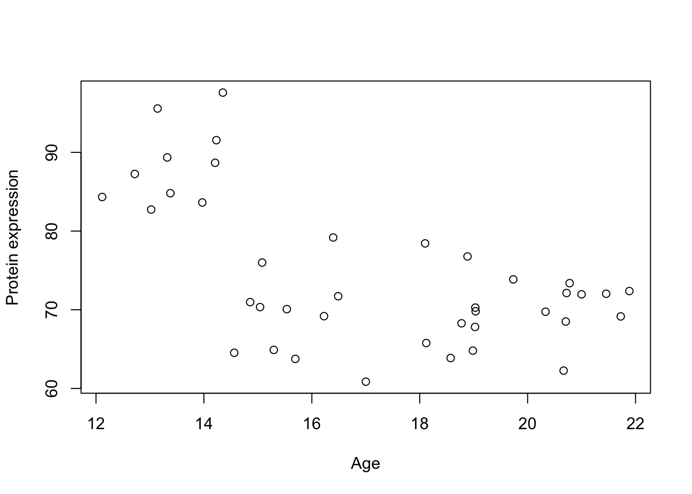
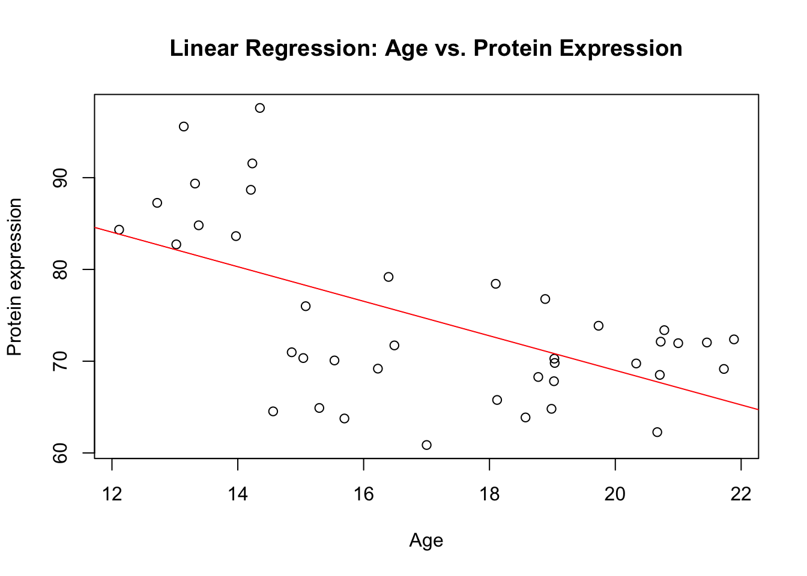
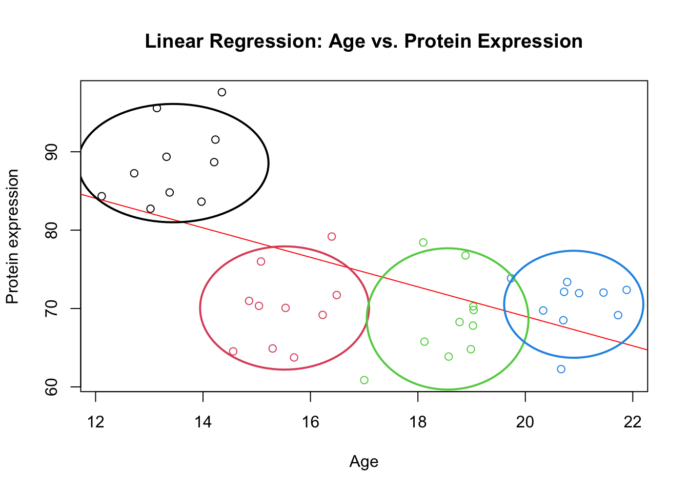
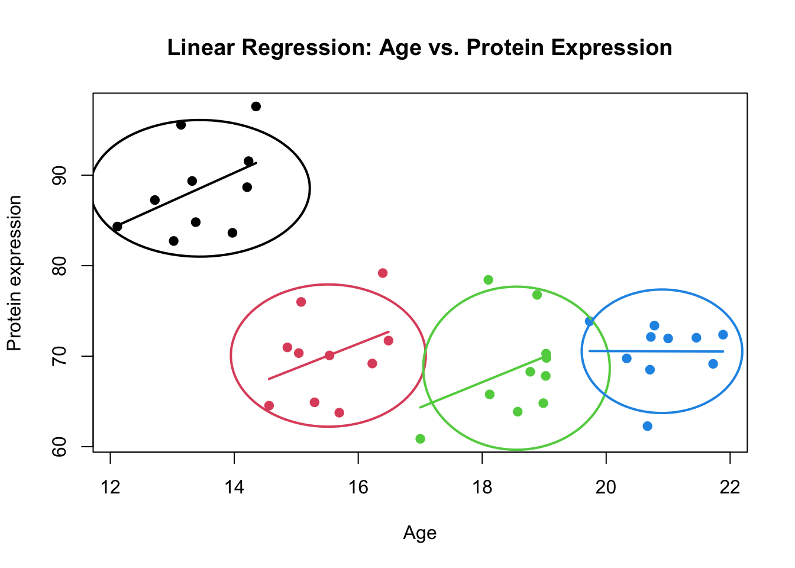
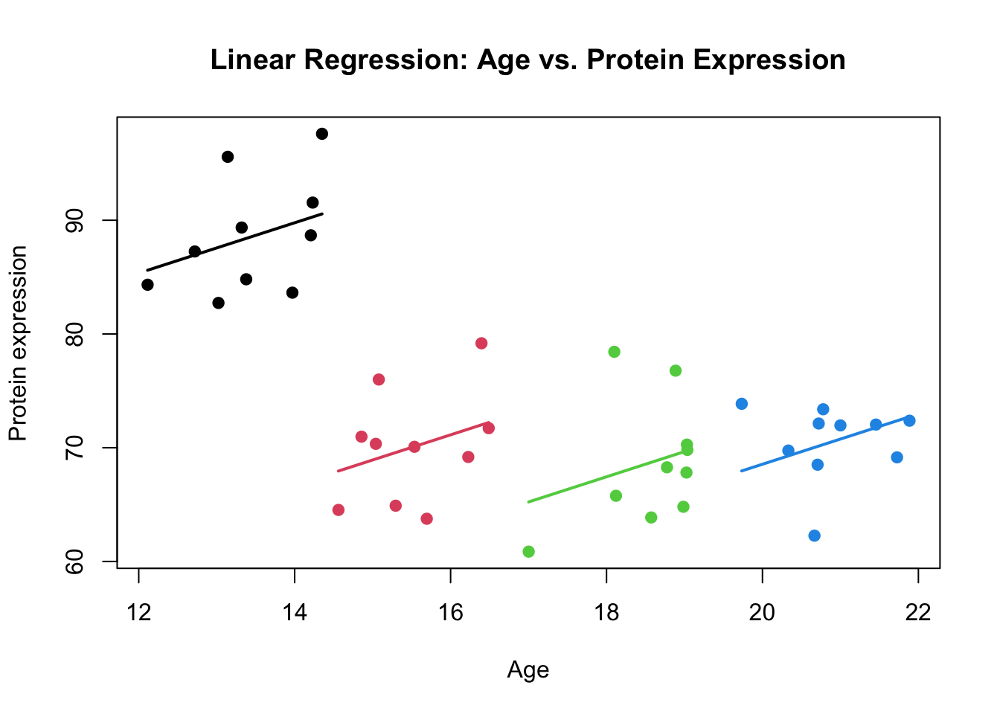
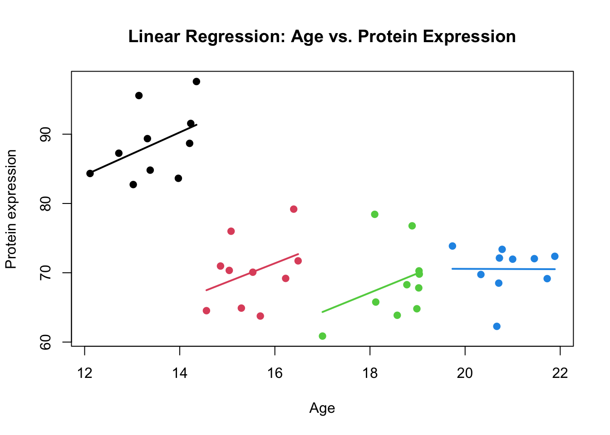

Imagine we are given a dataset of only two variables (measurements) for a number of people. This could be the expression of a single gene or a protein, body mass index (BMI), blood pressure, age, or any other quantifiable trait.
Code
simulate_grouped_trend <-function(group_count =5, points_per_group =10, global_slope =-10, global_intercept =30, group_slope =2, noise_sd =50) {set.seed(123) # Setting a seed for reproducibility# Initialize an empty data frame to store the simulated data data <-data.frame(x =numeric(), y =numeric())# Loop to create each groupfor (i in1:group_count) { x_start <-12+ (i -1) * (10/ group_count) # Stagger the start of x for each group x <-runif(points_per_group, min = x_start, max = x_start + (10/ group_count))# Apply a local positive trend within the group, but maintain the global negative trend local_intercept <- global_intercept + global_slope * (x_start + (10/ (2* group_count))) +rnorm(1, mean =0, sd = noise_sd) y <- local_intercept + group_slope * (x - x_start) +rnorm(points_per_group, mean =0, sd = noise_sd)# Combine this group with the overall dataset group_data <-data.frame(x = x, y = y,group=i) data <-rbind(data, group_data) }return(data)}# generate simulated datadata_int <-simulate_grouped_trend(group_count =4,points_per_group =10,global_slope =-2,global_intercept =100,group_slope =4,noise_sd =5)# plot the dataplot(data_int$x,data_int$y,xlab="Age",ylab="Protein expression")

Figure 1: A scatter plot of Age vs. Protein expression
Our aim here is to examine the relationship between Age and Protein expression, we would apply a simple linear regression model. This statistical method allows us to quantify the relationship between an independent variable (Age) and a dependent variable (Protein expression), assuming a linear relationship between them. The goal here is to determine how Protein expression changes with Age.
Code
# Fit a linear regression modelmodel <-lm(y ~ x, data = data_int)# Plot the data with the regression lineplot(data_int$x, data_int$y, xlab="Age", ylab="Protein expression", main="Linear Regression: Age vs. Protein Expression")abline(model, col="red") # Add the regression line in red

Figure 2: Scatter plot of Age vs. Protein expression including the regression line
The lm() function fits a linear model to the data, allowing us to see the relationship between Age and Protein expression. What this plot suggests is that there is a global decrease in Protein expression as Age increases, which is depicted by the negative slope of the red regression line. The scatter of points around the line indicates variability in Protein expression that is not explained by Age alone.
Based on the output from the lm() function, we can extract the coefficients and examine the fit of our linear regression model.
Code
# Summary of the model to see the coefficientssummary(model)
Call:
lm(formula = y ~ x, data = data_int)
Residuals:
Min 1Q Median 3Q Max
-14.7166 -6.2725 0.7094 5.0500 17.9565
Coefficients:
Estimate Std. Error t value Pr(>|t|)
(Intercept) 106.6762 7.2948 14.62 < 2e-16 ***
x -1.8836 0.4204 -4.48 6.63e-05 ***
---
Signif. codes: 0 '***' 0.001 '**' 0.01 '*' 0.05 '.' 0.1 ' ' 1
Residual standard error: 7.761 on 38 degrees of freedom
Multiple R-squared: 0.3457, Adjusted R-squared: 0.3285
F-statistic: 20.07 on 1 and 38 DF, p-value: 6.627e-05
The intercept, estimated at 106.6762, represents the expected Protein expression when Age is zero. Although having an age of zero is not meaningful in this context, the intercept gives us a starting reference point for the model.
The slope coefficient for Age (x) is -1.8836, indicating that for each one-unit increase in Age, Protein expression is expected to decrease by approximately 1.88 units. This negative association is significant, as indicated by the p-value of 6.63e-05, which is much lower than the conventional threshold of 0.05 for statistical significance.
The standard error of the estimate for the slope tells us the average amount that the coefficient estimates vary from the actual average value of our response variable. Here, the standard error for the slope is 0.4204, which is relatively small compared to the estimate itself, suggesting a precise estimate of the slope. So we are pretty confident in what we have estimated. However, while the regression line provides a clear visual indication of the overall trend, it does not account for the potential clustering of data points.
If you look more closely, you can see four different clusters of the data.
Code
# Plot the data with different colors for each groupplot(data_int$x, data_int$y, xlab="Age", ylab="Protein expression", main="Linear Regression: Age vs. Protein Expression", col=data_int$group)# Add a linear regression lineabline(lm(y ~ x, data = data_int), col="red")# Function to draw ellipsedraw_ellipse <-function(x, y, level =0.95, col){# Calculate the means of x and y xbar <-mean(x) ybar <-mean(y)# Calculate the standard deviations std_x <-sd(x)*2 std_y <-sd(y)*2# Calculate the correlation correlation <-cor(x, y)# Create a sequence of angles t <-seq(0, 2*pi, length.out =100)# Calculate the ellipse points a <- std_x *sqrt(1+ correlation) b <- std_y *sqrt(1- correlation) ellipse_x <- xbar + a *cos(t) ellipse_y <- ybar + b *sin(t)# Draw the ellipselines(ellipse_x, ellipse_y, col=col, lwd=2)}# Draw ellipses for each groupunique_groups <-unique(data_int$group)colors <-rainbow(length(unique_groups))for (group in unique_groups) { group_data <- data_int[data_int$group == group, ]draw_ellipse(group_data$x, group_data$y, col=group)}

Figure 3: Scatter plot of Age vs. Protein expression including the regression line. The clusters are shown by colors
While the global pattern seems decreasing, the local pattern per cluster of data increases with Age.
Code
# Plot the data with different colors for each groupplot(data_int$x, data_int$y, xlab="Age", ylab="Protein expression", main="Linear Regression: Age vs. Protein Expression", pch=19, col=data_int$group)# Draw ellipses and regression lines for each groupunique_groups <-unique(data_int$group)colors <-rainbow(length(unique_groups))for (group in unique_groups) { group_data <- data_int[data_int$group == group, ]# Draw ellipsedraw_ellipse(group_data$x, group_data$y, col=group)# Fit linear model for the group group_model <-lm(y ~ x, data=group_data)# Get regression line points reg_line_x <-range(group_data$x) reg_line_y <-predict(group_model, newdata=data.frame(x=reg_line_x))# Draw the regression line for the grouplines(reg_line_x, reg_line_y, col=group, lwd=2)}

Figure 4: Scatter plot of Age vs. Protein expression including the regression line. The clusters are shown by colors
More precisely, there is a positive trend in each of the clusters that has not been captured by the model. Instead the model focused on the global pattern. The example that we just saw was a case when both Protein expression and Age are correlated within each cluster.
You could of course fit single model for each of the group or even using the groups as covariate in the model. Both of these options can be OK in circumstances that we don’t have too many groups and we have enough data in each of groups. Below we try to use the cluster as covariate to see what would happen to the coeffcients.
Code
# Fit a linear regression modeldata_int$group <-as.factor(data_int$group)model_cov <-lm(y ~ x+group, data = data_int)# Get the predictionsdata_int$predicted <-predict(model_cov)# Plottingplot(data_int$x, data_int$y, xlab="Age", ylab="Protein expression", main="Linear Regression: Age vs. Protein Expression", pch=19, col=data_int$group)# Add predicted linesfor(i inseq_along(unique(data_int$group))){ group_subset <- data_int[data_int$group == unique_groups[i], ]lines(group_subset$x, group_subset$predicted, col = i, lwd =2)}

Figure 5: Scatter plot of Age vs. Protein expression including the regression line including group covariate
As it is clear in the figure, the function lm(y ~ x+group, data = data_int) has fitted four different lines (one for each group). These lines are parallel to each other while each group has a different intercept.
To make this even more clear we can have a look at the coeffcients of the the model:
Code
print(model_cov)
Call:
lm(formula = y ~ x + group, data = data_int)
Coefficients:
(Intercept) x group2 group3 group4
58.798 2.213 -23.072 -31.187 -34.509
Starting with the intercept, which is 58.798, this tells us the expected value of y when x is at 0 and when we are considering the baseline group (group1). It’s like saying, “If we don’t move x and if we’re looking at group1, y would be around 58.798.”
Next, we have the coefficient for x, which is 2.213. This number shows how y changes with a one-unit increase in x, across all groups. It’s a universal slope, implying that regardless of which group we’re looking at, if x goes up by one, y tends to increase by about 2.213 units, holding everything else constant.
Now, let’s talk about the interesting part - the different intercepts for each group beyond the first. The coefficients for group2 (-23.072), group3 (-31.187), and group4 (-34.509) adjust the baseline level of y for each group compared to group1. What this means is that if we’re in group2 and x is 0, y is expected to be 23.072 units lower than the baseline of group1. Similarly, for group3 and group4, y would be 31.187 and 34.509 units lower than group1’s baseline, respectively, when x is 0.
These differences highlight that our groups have unique starting points for y, which aren’t explained by x alone. There are underlying characteristics or conditions specific to each group that affect y, independent of x. By including these group differences in our model, we can accurately capture the unique relationship between x and y for each group, showing that not every group begins from the same place.
Having explored how different groups can have unique starting points or intercepts in our model, it’s natural to wonder if the relationship between x and y—our slope—might also vary across these groups. Until now, we’ve assumed that a one-unit increase in x has the same impact on y for all groups. But what if this isn’t the case? What if the effect of x on y is stronger for some groups than for others?
To explore this possibility, we introduce the concept of interaction terms in our model. By fitting a new model, model_cov <- lm(y ~ x*group, data = data_int), we’re not just looking at how x and group independently predict y, but also how the effect of x on y might change depending on the group. This model allows x to have a different slope for each group, providing a richer understanding of our data. It’s a step towards uncovering more complex patterns and interactions that might exist, shedding light on the nuanced ways in which our variables interplay.
Code
# Fit a linear regression modeldata_int$group <-as.factor(data_int$group)model_cov <-lm(y ~ x*group, data = data_int)# Get the predictionsdata_int$predicted <-predict(model_cov)# Plottingplot(data_int$x, data_int$y, xlab="Age", ylab="Protein expression", main="Linear Regression: Age vs. Protein Expression", pch=19, col=data_int$group)# Add predicted linesfor(i inseq_along(unique(data_int$group))){ group_subset <- data_int[data_int$group == unique_groups[i], ]lines(group_subset$x, group_subset$predicted, col = i, lwd =2)}print(model_cov)
Call:
lm(formula = y ~ x * group, data = data_int)
Coefficients:
(Intercept) x group2 group3 group4 x:group2
46.9913 3.0911 -18.8314 -30.0940 24.0594 -0.3905
x:group3 x:group4
-0.3006 -3.1154

Figure 6: Scatter plot of Age vs. Protein expression including the regression line with interaction
The interaction terms in our new model model_cov <- lm(y ~ x*group, data = data_int) reveal yet another layer of complexity. Now, not only do we recognize that each group starts at a different point, but we also see that the relationship between x and y—how y changes as x increases—is not a one-size-fits-all across the groups.
Now, let’s interpret the coefficients:
(Intercept) 46.9913: This is the expected protein expression when age is zero for the baseline group (group1).
x 3.0911: This coefficient represents the slope of the line for the baseline group. For each additional year of age, the protein expression is expected to increase by 3.0911 units for group1.
group2 -18.8314: This coefficient adjusts the intercept for group2. So, the expected starting point for protein expression in group2, when age is zero, is 46.9913 (the baseline intercept) minus 18.8314, giving us a starting point of 28.1599.
group3 -30.0940: Similarly, for group3, the expected starting point for protein expression when age is zero is 46.9913 minus 30.0940, resulting in 16.8973.
group4 24.0594: For group4, the expected starting point is 46.9913 plus 24.0594, which is 71.0507, indicating that group4 has a higher starting point than group1.
x:group2 -0.3905: This is the interaction term for age and group2, indicating how the slope for group2 differs from the baseline group’s slope. The slope for group2 is 3.0911 (baseline slope) minus 0.3905, which is approximately 2.7006. This suggests that for group2, for each additional year of age, the protein expression increases by about 2.7006 units, which is less than the increase for group1.
x:group3 -0.3006: For group3, the slope is 3.0911 minus 0.3006, approximately 2.7905. So the rate of increase in protein expression per year of age for group3 is slightly less than for group1 but not as much less as for group2.
x:group4 -3.1154: This interaction term indicates a significant change in the slope for group4 compared to group1. The slope for group4 is 3.0911 minus 3.1154, which is approximately -0.0243. This would suggest a slight decrease in protein expression with age for group4, which is contrary to the positive association seen in the other groups.
The interaction terms, specifically the coefficients for x:group2, x:group3, and x:group4, tell us just how much the slope of the relationship between x and y differs for each group compared to our baseline group1. For example, group2 has a slightly lesser slope than group1, indicating that as x increases, y increases but not as rapidly as in group1. Group3 follows a similar pattern, albeit the difference is more modest.
Most intriguing is group4, where the interaction term is quite pronounced, suggesting that the increase in y with x is significantly less for group4 compared to group1 in fact, it’s almost negligible, indicating a nearly flat line. This could mean that for individuals in group4, changes in x do not translate into changes in y as they do for the other groups.
What we just saw was a simple example of how to handle clustered data in a simple linear regression. Without accounting for these cluster-related differences, the assumption of independence among observations—a cornerstone of linear regression—is violated, as the outcome within a cluster are inherently correlated. This correlation persists even when attempting to control for the cluster’s effect, due to other unobservable factors.
The consequence of ignoring cluster-level effects might lead to incorrect inferences, as standard errors are usually underestimated, making them appear more precise than they actually are. While the regression coefficients themselves might remain unbiased, the underestimation of standard errors can falsely enhance the significance of findings. Furthermore, we often ten to overestimate the degrees of freedom leading to inflated p-values.
Addressing this issue often involves introducing indicator variables (similar to what we have done above) to account for cluster effects, allowing for different intercepts or even slope for each cluster. However, this approach becomes impractical with a large number of clusters or when dealing with longitudinal data. Furthermore, we might not even be interested in modeling clusters parameters, we are just interested in some specific questions. Think about the simple dataset we just analyzed, the main effect of interest was Age, however, we had to estimate a lot more parameters in the model to account for the cluster effect. More specifically, in lm(y~x+group) we estimate five parameters and in lm(y~x*group,data_int) we had eight parameters while we basically needed two. These parameters are all degrees of freedom that we spend while we might not even be interested in the cluster level parameters. Now imagine we might have hundreds of nested clustered with limited data, such modeling attemp will quickly become .infeasible and may lead to overfitting. In such cases, the model would consume degrees of freedom excessively, reducing the power of statistical tests and potentially leading to unreliable estimates due to the curse of dimensionality. Moreover, with a high number of parameters relative to the number of observations, standard errors of the estimates increase, which can make the model’s predictions less precise.
To address these issues, we often resort to mixed-effects models which is the topic of the next chapter.